Sinus tach vs SVT · brought to you by Kardiograph
Two plugs for Kardiograph by Medzcool, cut into the finished v8. A quick opener with no voice-over right after the title card, and a voiced end plug before the Subscribe card. Both are Comma Clinical motion on v8's own warm paper, built in Remotion, and every strip is lead II from Kardiograph's own EKG engine. These frames are pulled from the v9 render itself, and timecodes are v9 times.
Opener · 0:12, no voice-over
After the title card, the frame folds into a point and Kardiograph unfolds out of it: who brought you the video, one feature (practice: read a strip, pick an answer, get scored), and the link. Then the title card grows back and the video carries on.
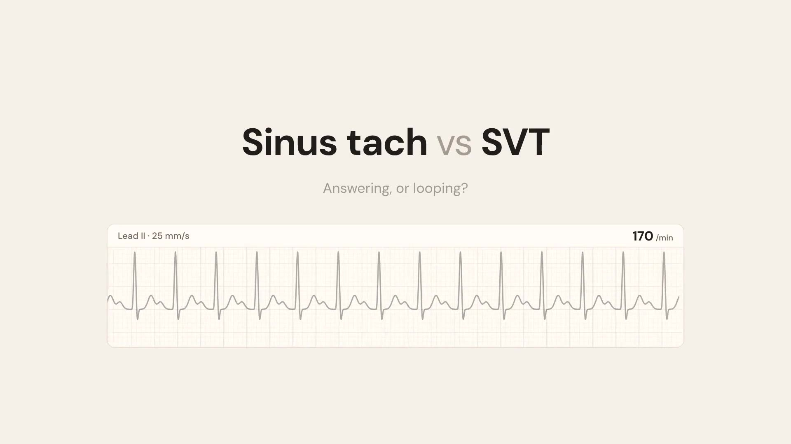
(no narration; the pause after "or stuck in a loop?")
The cut point. v8 holds its title card here, so the plug starts on this exact frame: the whole frame shrinks into the centre point on the accelerate curve (0.25 s).
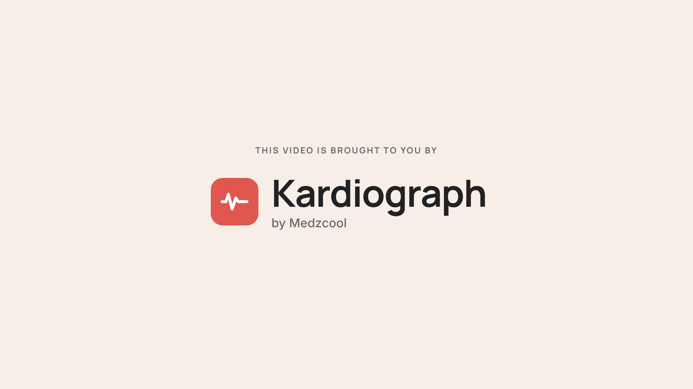
(no narration) Sound: a soft pop as the mark lands, a lighter one as the wordmark finishes.
The Kardiograph mark grows out of the point with a small overshoot, slides left, and the wordmark unfolds from its edge. "This video is brought to you by" cuts on. On screen about 2.4 s.
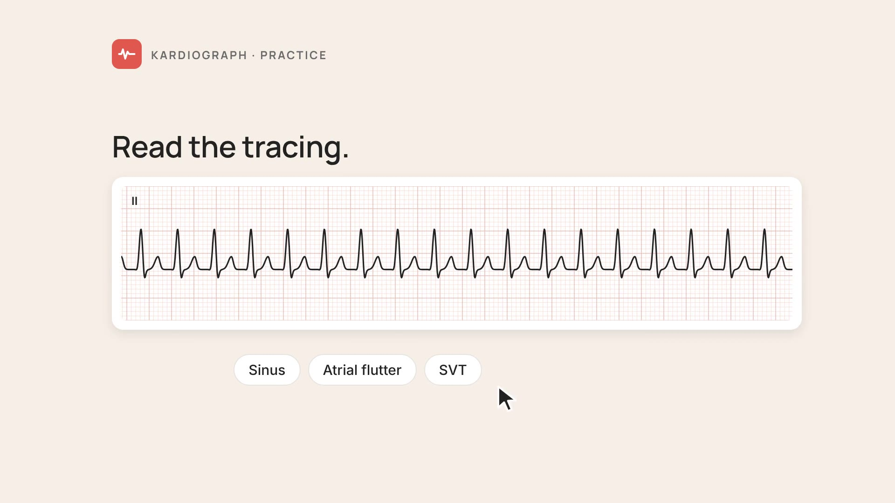
(no narration) Sound: a pop on the card, a soft pop on the chips.
The mark tracks to the corner as the practice card grows from the centre. The strip is real SVT (183 bpm) from Kardiograph's engine, scrolling at 25 mm/s. Three answer chips land in a stagger, then the cursor grows from its tip and travels to SVT.
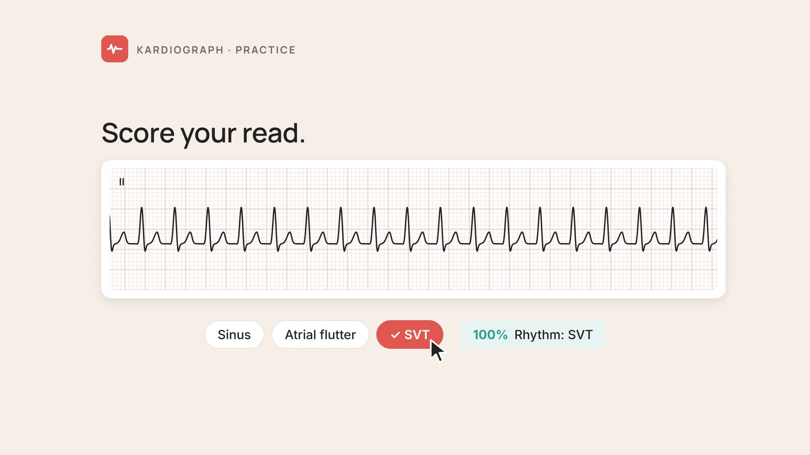
(no narration) Sound: a mouse click, then a two-note chime.
Click: the SVT chip turns coral with a check and pings, a coral ring pushes out from the cursor, the heading cuts to "Score your read." and the 100% score grows on. The card holds about 1.8 s.
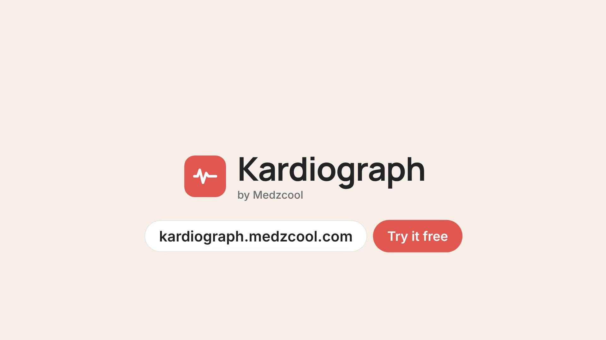
(no narration) Sound: a pop on the mark, a soft pop on the pills.
The practice frame shrinks into the centre and the lockup grows back with kardiograph.medzcool.com and Try it free. On screen 1.6 s.
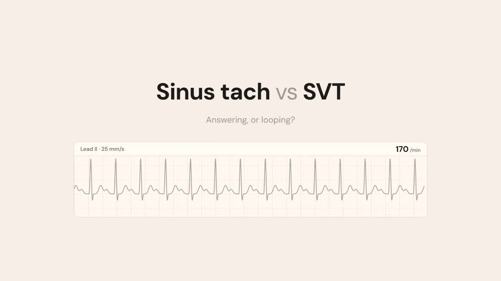
(no narration)
The lockup shrinks into the point and the title card grows back out of it, so v8 carries on from its next frame. Every chapter after this moves 9.3 s later than in v8.
End plug · 2:59, voiced
What Kardiograph is and why it helps a student: true-scale tracings you can measure, and practice strips that are generated fresh every time. Every move lands on a measured word.
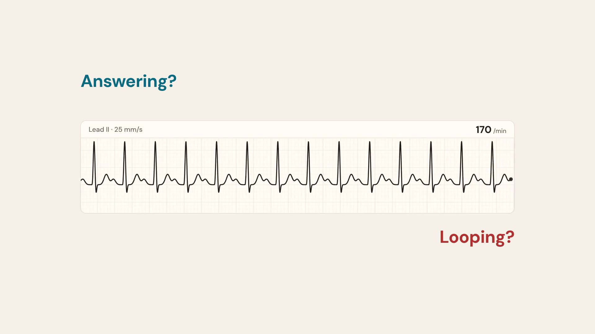
(v8)
v8's last scene clears to blank paper (v8 frames 5091-5100). The end plug starts and ends on that same paper, so neither cut shows.
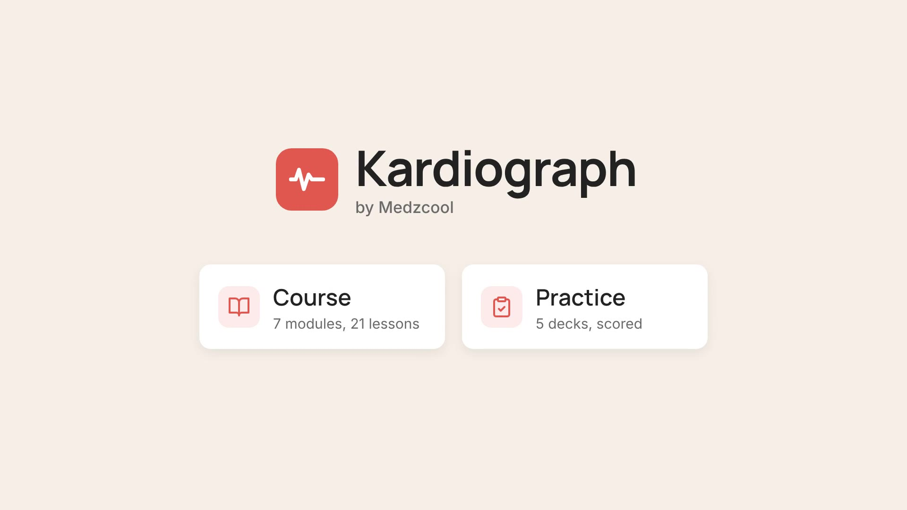
Kardiograph is Medzcool's EKG course and practice bench.
The mark grows on "Kardiograph" and the wordmark unfolds. The Course tile (7 modules, 21 lessons) lands on "course" and the Practice tile (5 decks, scored) on "practice".
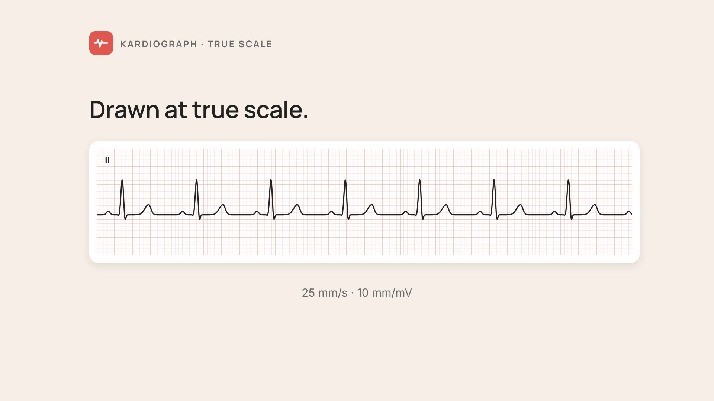
Every tracing is drawn at true scale,
On "Every" the lockup shrinks away and a sinus strip card grows; on "true" the heading and the paper speed cut on. Grid and trace are drawn at 25 mm/s and 10 mm/mV.
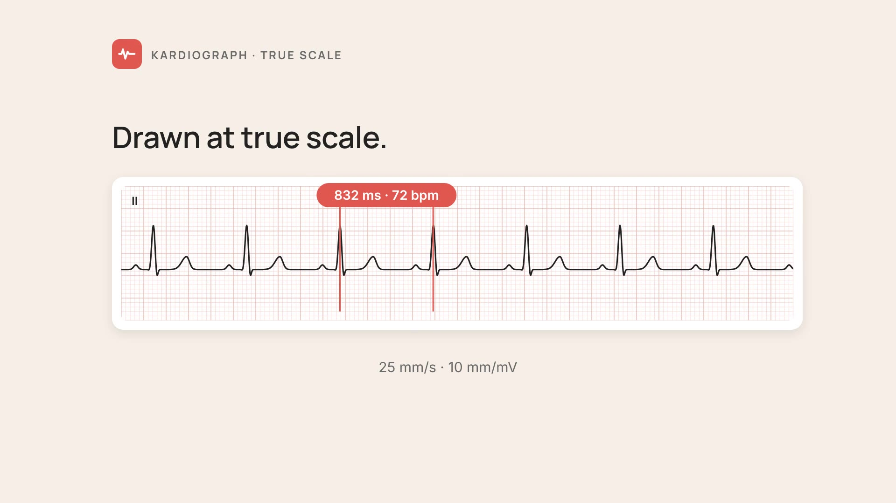
so you can measure it with calipers, like on the wards.
On "calipers" the legs drop and open from one R wave to the next, then the readout grows on: 832 ms, 72 bpm.
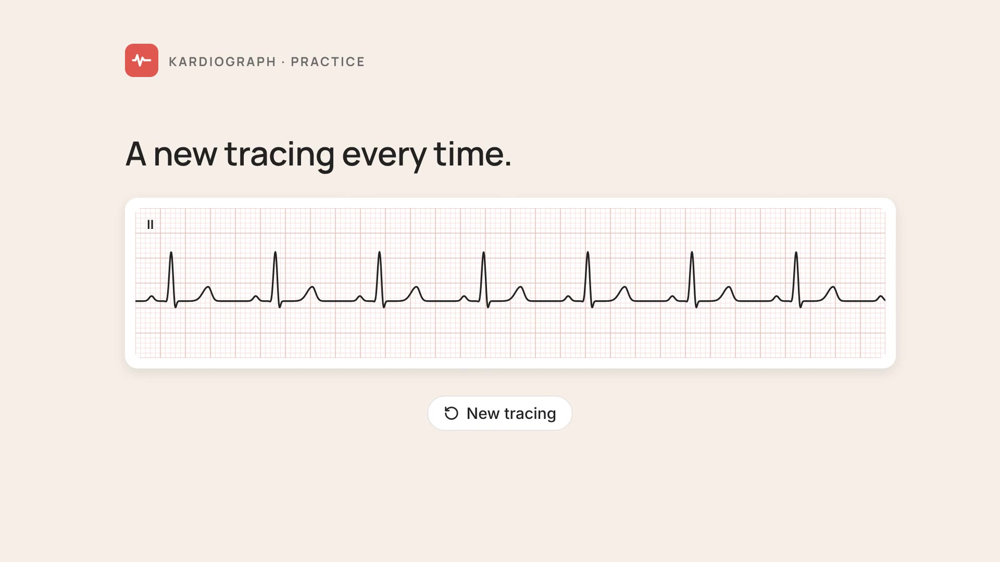
And every practice strip is procedurally generated,
On "And" the heading cuts to "A new tracing every time." and the New tracing pill grows under the card.
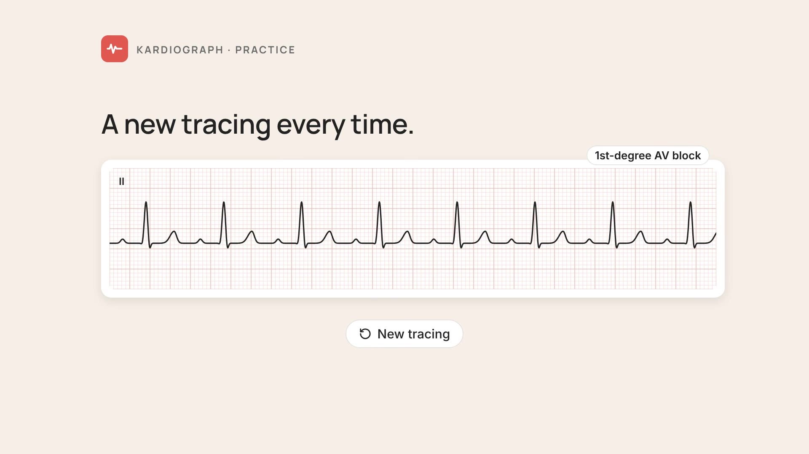
(continues) ...procedurally generated,
On "procedurally" the strip swaps every 0.3 s: atrial fibrillation, atrial flutter, 1st-degree AV block, Mobitz I, SVT, sinus. Each carries its name chip and a soft click, and the pill pings on every swap.
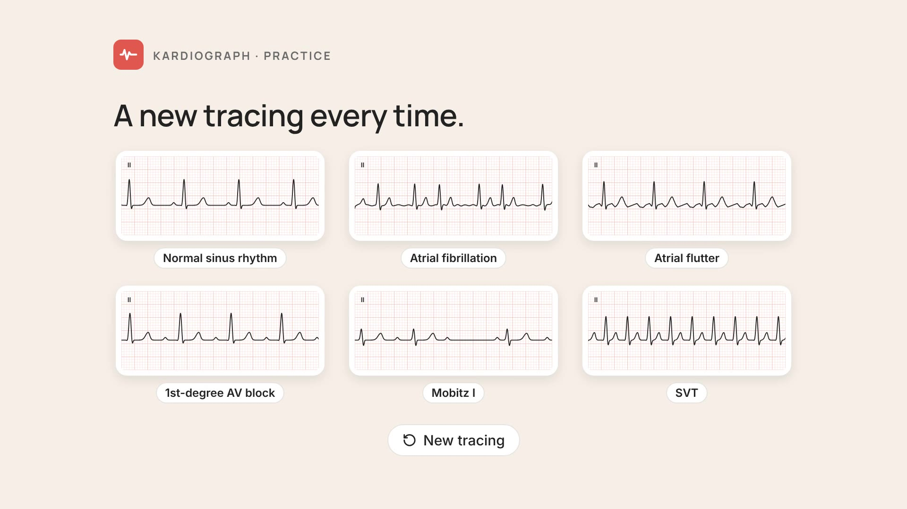
so the variety of EKGs you'll see in Kardiograph's practice sessions is endless.
On "variety" six rhythms grow into a grid in a stagger, each a 3 s strip with its name. The New tracing pill pings on "endless".
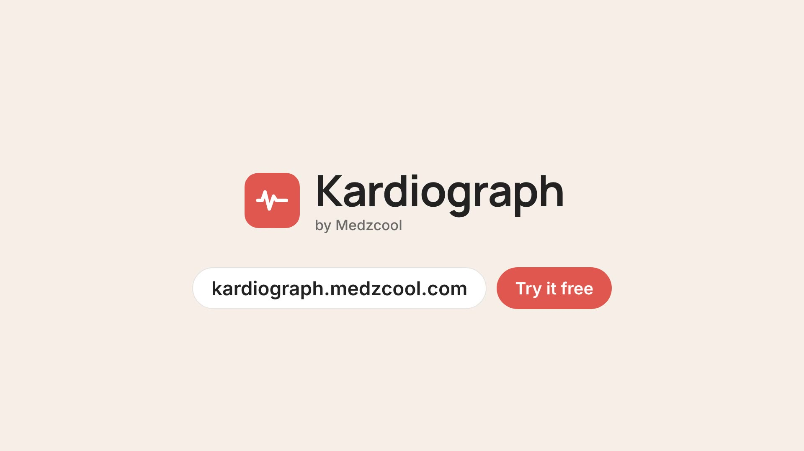
Try it free at kardiograph.medzcool.com.
The lockup grows back on "Try", Try it free lands on "free" and the link on "Kardiograph". Holds 1 s after the last word, then shrinks into the centre and leaves blank paper.
(no narration)
v8's silent Subscribe card follows as before, now at 3:20.6 to 3:28.5, with room for YouTube end-screen elements.